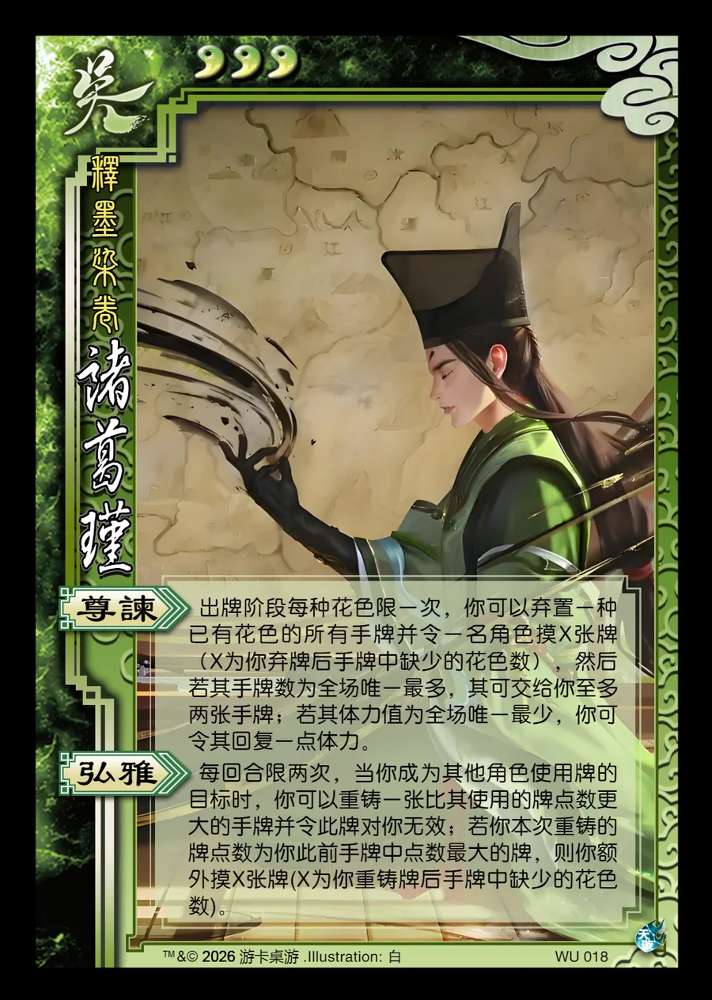

点击卡面查看大图
吴
星诸葛瑾
♥3释墨染卷
尊谏
出牌阶段每种花色限一次，你可以弃置一种已有花色的所有手牌并令一名角色摸X张牌（X为你弃牌后手牌中缺少的花色数），然后若其手牌数为全场唯一最多，其可交给你至多两张手牌；若其体力值为全场唯一最少，你可令其回复一点体力。
弘雅
每回合限两次，当你成为其他角色使用牌的目标时，你可以重铸一张比其使用的牌点数更大的手牌并令此牌对你无效；若你本次重铸的牌点数为你此前手牌中点数最大的牌，则你额外摸X张牌(X为你重铸牌后手牌中缺少的花色数)。